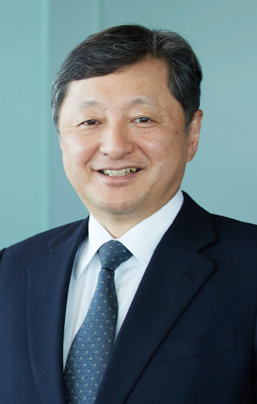

8.23（水）13：00～13：30
AGCの技術開発を加速する開発戦略の背景と新たな価値を生み出すDXの取組み
ＡＧＣ
代表取締役 兼 専務執行役員CTO、
技術本部長
倉田 英之 氏
AGCグループでは、コア事業の強化と新事業の創出に取り組み、事業ポートフォリオの転換を進めています。本公演では、これらの取り組みを支える技術開発スピードアップのためのアプローチである、「両利きの開発」「オープンイノベーション」「DX」からなる3本柱の戦略、およびDXの取り組みと活用事例について紹介します。